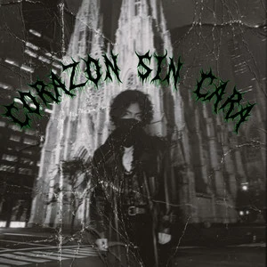
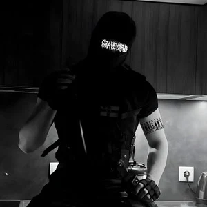
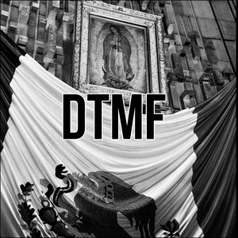
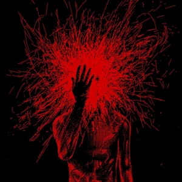
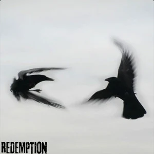

Armageddon
Choose where to listen to ArmageddonSINGLE
01 / AUDIO ARCHIVE
← BACK TO THE ALTEREvery signal. Every distortion. Step into the catalog.
LATEST TRANSMISSION
BENEATH THE ALTER · SINGLE
Turn it up. Let it in.
WHERE TO LISTENOFFICIAL RELEASE · NO AUTOPLAY
THE DISCOGRAPHY
SINGLE
SINGLE · LATEST RELEASE
SINGLE

SINGLE

SINGLE

SINGLE

SINGLE

SINGLE
FROM THE ORIGINAL SITE
Tap any song to open its link tree — every platform that plays it, in one place. Audio never starts without you.
SELECTED TRACK
DTMF
PLAYS HERE VIA SPOTIFY